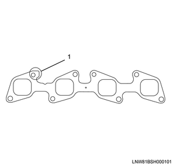
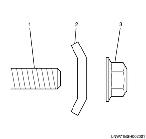
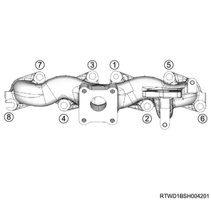
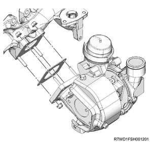
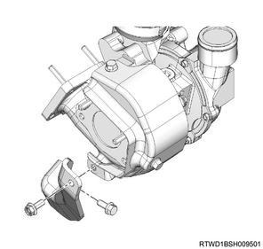
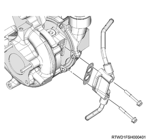
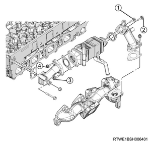
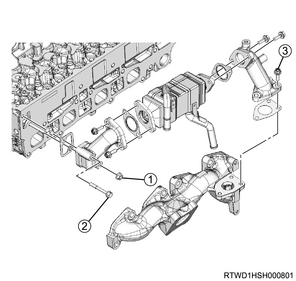

Exhaust manifold installation (4JJ1)
1. Exhaust manifold installation
1. Install the gasket to the cylinder head.
Note
- Assemble the projection section to the rear side of the cylinder head.
Caution
- Do not reuse the gasket.

- Projection
2. Temporarily tighten the exhaust manifold to the cylinder head.
Note
- Install the washer and nut, and tighten them temporarily as shown in the diagram.

- Stud bolt
- Washer
- Nut
3. Securely tighten the exhaust manifold to the cylinder head.
Note
- Tighten in the order shown in the diagram.
Tightening torque： 52 N・m { 5.3 kgf・m / 38 lb・ft }
Caution
- Avoid tightening them too much because doing so may hamper expansion and contraction of the manifold due to heat.

2. Generator connect
1. Connect the harness to the generator.
Tightening torque： 12 N・m { 1.2 kgf・m / 106 lb・in } Terminal nut
3. Turbocharger assembly installation
1. Install the gasket to the turbocharger.
Caution
- Do not reuse the gasket.
2. Install the turbocharger to the exhaust manifold.
Tightening torque： 27 N・m { 2.8 kgf・m / 20 lb・ft }

Note
- Feed 0.5 cc engine oil from the oil filler.
4. Turbocharger bracket installation
1. Install the turbocharger bracket to the turbocharger and the cylinder block.
Tightening torque： 25 N・m { 2.5 kgf・m / 18 lb・ft }

5. Catalyst converter installation
1. Install the catalyst converter to the turbocharger assembly.
Tightening torque： 27 N・m { 2.8 kgf・m / 20 lb・ft }

Caution
- Do not reuse the gasket.
2. Temporarily tighten the catalyst converter to the crankcase.
Note
- Temporarily tighten in the order shown in the diagram.

3. Securely tighten the catalyst converter to the crankcase.
Note
- Firmly tighten in the order shown in the diagram.
Tightening torque： 94 N・m { 9.6 kgf・m / 69 lb・ft }
4. Connect the catalyst converter to the front exhaust pipe.
Tightening torque： 67 N・m { 6.8 kgf・m / 49 lb・ft }

Caution
- Do not reuse the gasket.
6. Water feed and return pipe installation
1. Install the water feed and return pipe to the turbocharger.
Tightening torque： 10 N・m { 1.0 kgf・m / 89 lb・in }
Caution
- Do not reuse the gasket.

7. Oil return pipe installation
1. Install the oil return pipe to the turbocharger and the crankcase.
Tightening torque： 10 N・m { 1.0 kgf・m / 89 lb・in } Turbocharger side
Tightening torque： 25 N・m { 2.5 kgf・m / 18 lb・ft } Crankcase side
Caution
- Do not reuse the gasket.

8. Turbocharger feed oil pipe installation
1. Install the turbocharger feed oil pipe to the turbocharger and the oil cooler.
Tightening torque： 23 N・m { 2.3 kgf・m / 17 lb・ft }
Caution
- Do not reuse the gasket.

- Turbocharger feed oil pipe
9. Turbocharger water return hose connect
1. Connect the turbocharger water return hose to the water feed and return pipe.

- Turbocharger water feed hose
- Turbocharger water return hose
10. Turbocharger control solenoid connect
1. Connect the vacuum hose to the turbocharger control solenoid.
11. EGR cooler installation
1. Temporarily tighten the EGR pipe adapter to the EGR cooler.
Note
- Temporarily tighten in the order shown in the diagram.
Caution
- Do not reuse the gasket.

2. Securely tighten the EGR pipe adapter to the EGR cooler.
Note
- Final tighten in the order shown in the diagram.
Tightening torque： 27 N・m { 2.8 kgf・m / 20 lb・ft }
3. Temporarily tighten the EGR cooler to the cylinder head and the exhaust manifold.
Note
- Temporarily tighten in the order shown in the diagram.
Caution
- Do not reuse the gasket.

4. Securely tighten the EGR cooler to the cylinder head and the exhaust manifold.
Note
- Final tighten in the order shown in the diagram.
Tightening torque： 27 N・m { 2.8 kgf・m / 20 lb・ft }
12. Exhaust manifold heat protector installation
1. Install the exhaust manifold heat protector to the exhaust manifold.
Tightening torque： 25 N・m { 2.5 kgf・m / 18 lb・ft }


13. Water hose connect
1. Connect the water hose to the EGR cooler.
Note
- Connect both the feed hose and the return hose to the EGR cooler.

- Return hose
- Feed hose
14. Water pipe installation
1. Install the water pipe to the cylinder head assembly.
Tightening torque： 10 N・m { 1.0 kgf・m / 89 lb・in } Bolt, nut

2. Connect the turbocharger water feed hose to the outlet pipe.
15. Turbocharger water feed pipe connect
1. Connect the turbocharger water feed hose to the water feed and return pipe.
- Turbocharger water feed hose
- Turbocharger water return hose
16. Vacuum hose installation
1. Install the vacuum hose to the turbocharger and the vacuum pipe.

17. Air cleaner assembly installation
1. Install the air cleaner assembly to vehicle.
Tightening torque： 20 N・m { 2.0 kgf・m / 15 lb・ft }

- Air cleaner assembly
- MAF sensor
- Vacuum hose
- Blow-by hose
- Intake pipe
- Barometric pressure sensor
2. Connect the intake pipe to the turbocharger assembly.
Tightening torque： 4 N・m { 0.4 kgf・m / 35 lb・in }
Note
- Install by aligning the alignment mark position as shown in the diagram.

- Alignment mark
3. Connect the vacuum hose to the air cleaner assembly.
4. Connect the harness connector to the barometric pressure sensor.
5. Connect the harness connector to the MAF sensor.
18. Blow-by hose connect
1. Connect the blow-by hose to the cylinder head cover.
19. Intake air duct installation
1. Install the intake air duct to the turbocharger and the intercooler.
Caution
- Referring to the diagram, face the threaded portion of the clamp toward the engine front.
Tightening torque： 25 N・m { 2.5 kgf・m / 18 lb・ft } Nut, bolt
Tightening torque： 4 N・m { 0.4 kgf・m / 35 lb・in } Clamp (Turbocharger side)
Tightening torque： 5 N・m { 0.5 kgf・m / 44 lb・in } Clamp (Intercooler side)

20. Engine cover installation
1. Install the engine cover to the engine.

- Engine cover
21. Underguard installation
Note
- The following applies to models with an under air deflector.
1. Install the under air deflector to the frame.
Note
- Tighten the clip and the 5 bolts.
Tightening torque： 42 N・m { 4.3 kgf・m / 31 lb・ft }

- Bolt
- Clip
Note
- The following applies to models with front and rear underguard.
2. Install the rear underguard to the frame.
Note
- Tighten the 4 bolts.
Tightening torque： 42 N・m { 4.3 kgf・m / 31 lb・ft }
3. Install the front underguard to the frame.
Note
- Tighten the 5 bolts.
Tightening torque： 42 N・m { 4.3 kgf・m / 31 lb・ft }

- Front underguard
- Rear underguard
- Bolt
Note
- The following applies to models with front and rear underguard and an oil pan guard.
4. Install the rear underguard to the frame.
Note
- Tighten the 4 bolts.
Tightening torque： 42 N・m { 4.3 kgf・m / 31 lb・ft }
5. Install the oil pan guard to the frame.
Note
- Tighten the 4 bolts.
Tightening torque： 90 N・m { 9.2 kgf・m / 66.4 lb・ft }
6. Install the front underguard to the frame.
Note
- Tighten the 5 bolts.
Tightening torque： 42 N・m { 4.3 kgf・m / 31 lb・ft }

- Front underguard
- Oil pan guard
- Bolt oil pan guard
- Bolt
- Rear underguard
22. Coolant filling
1. Replenish the radiator with coolant.
Note
- Use the coolant contains 50 % anti-freeze solution.
- Pour coolant up to the filler neck.
2. Replenish the radiator reserve tank with coolant.
Note
- Pour coolant up to the MAX line.
3. Install the radiator cap to the radiator.
23. Battery ground cable connect
1. Connect the battery ground cable to the battery.
2. Close the engine hood assembly.
3. Lower vehicle.